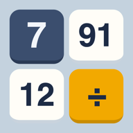

ワリキレ
素因数分解がパズルで身につく、4×4 の約数パズル。
あそびかた
- となり同士のタイルを入れかえる（スワイプ、または2回タップ）
- 同じ数で割り切れる数を、たて・よこに3つ以上ならべると、その数でわり算
- 1 になったタイルは消える。もう揃えられなくなったらおしまい。残りが少ないほど★が増える
よくある質問
Q. 機種変更したら有料版はどうなりますか？
同じ Apple ID（Android は同じ Google アカウント）なら、有料版の画面の「購入を復元」で使えるようになります。お金は再びかかりません。
Q. 記録（★やベスト）は引き継げますか？
記録は端末の中だけに保存しているため、別の端末には引き継げません。
Q. 音を消したい
最初の画面の右上、またはゲーム中の「i」ボタンから、効果音（🔊）と BGM（♪）を別々にオン・オフできます。
お問い合わせ
ファクトリーヘルス株式会社
メール：info@factory-health.com
プライバシーポリシー
プライバシーポリシー（個人情報は集めません）